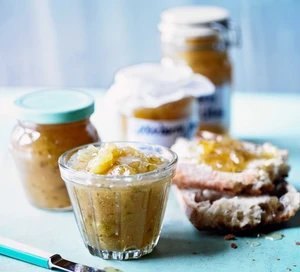

Gooseberry & Elderflower Jam

Description
Preserve the taste of the season and use up a glut of gooseberries and elderflower cordial to make this simple, sweet spread.
Ingredients
- 1kg gooseberries
- 900g granulated white sugar
- 100ml elderflower cordial
Steps
- Tip the gooseberries into a large saucepan or preserving pan with 300ml water. Cook over a low heat for about 15 mins, stirring occasionally, until the fruit has broken down into a soupy purée.
- Add the sugar and cook over a low heat until the sugar has dissolved, then turn up the heat as high as it will go and boil everything for 10 mins, stirring the bottom to make sure the jam doesn’t burn and skimming any scum off when it appears. If you have a jam or digital thermometer, the optimum temperature for the jam to set is 105C, but anything around 104C will be fine.
- Do the wrinkle test (see tip) on a frozen saucer to make sure it’s set, then add the elderflower cordial and leave to cool before decanting your jam into sterilised jars.
Go Back!